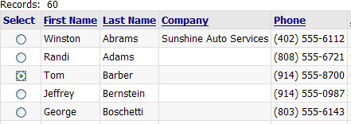
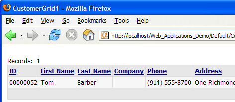

Using Radio Buttons to Select a Record
This technique allows you to identify a record selected with a radio button and read the value of a field bound to the radio button. In this example, the field will be the customer_id field, which is the unique key field for the customer table. This demonstration is based on the AlphaSports sample database.
Create a new page and save it as Customer_Grid.a5w.
Place the CustomerGrid1 grid on the page and save it.
Create a grid based on the customer table. Make sure the customer_id field is placed on the grid in the left-most column.
Display the Grid > Fields page.
Select the Column Properties > Freeform layout check box.
Click
 in the Column Properties > Freeform
template field to display the Freeform Column
Layout dialog. Enter the following HTML code.
in the Column Properties > Freeform
template field to display the Freeform Column
Layout dialog. Enter the following HTML code.
|
<div align="center"><input type="radio" name="cust_id" value="{Customer_Id}"></div> |
Create a new page using the HTML Editor .
Save the page as Radio_Button.a5w.
Place the new grid on the page named.
Switch to the Source tab of the HTML Editor.
Modify the table cell that contains <%A5 ?x_out.Output.Body.Grid_HTML %>. This is the line that displays the grid. The contents change from:
|
<td> <%A5 ?x_out.Output.Body.Grid_HTML %> </td> |
to:
|
<td> <form name=SelectCustomer method=post action="Customer_Grid.a5w"> <%A5 ?x_out.Output.Body.Grid_HTML %> <input class=" <%a5 ? tmpl.style_name %> Button" type=submit name="label" value="Open Record" > <input class=" <%a5 ? tmpl.style_name %> Button" type=reset value="Clear Selection"> </form> </td> |
This code adds a form and two buttons. Note that the grid component is inside the <form> ... </form> tags.

Save the Radio_Button.a5w page and open the Customer_Grid.a5w page.
Switch to the Source tab and add the following code in the override settings section. In this case the grid component was named "CG". The contents change from:
|
with tmpl_CG componentName = "CG" end with |
to:
|
with tmpl_CG componentName = "CG" if eval_valid("cust_id") DBF.filter = "customer_id = '" + cust_id + "'" end if end with |
This code first tests (with eval_valid()) to see if it has received the cust_id variable from the calling page. If it has, the code redefines the DBF.filter property with the expression "customer_id = '" + cust_id + "'". The result is that the grid displays only those records where customer_id equals cust_id.

See Also